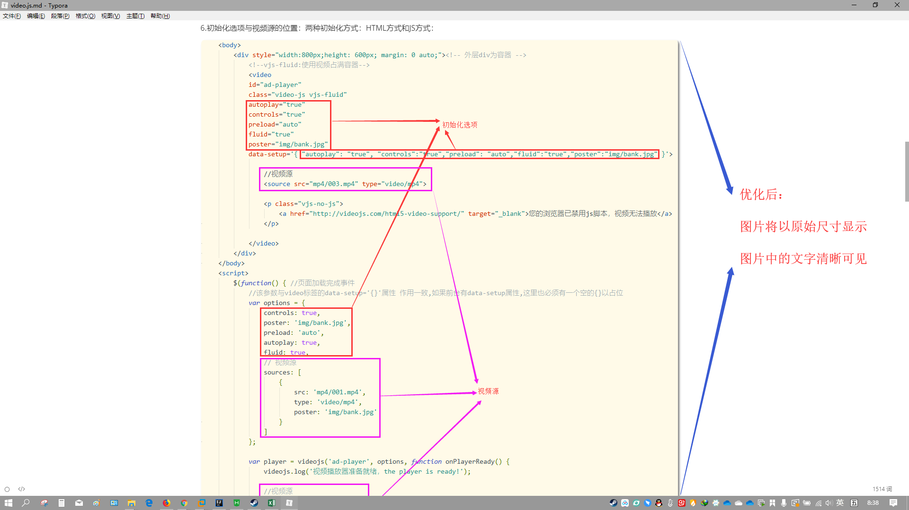
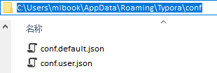

原文出处:本文由博客园博主nreg提供。
原文连接:https://www.cnblogs.com/nreg/p/11116176.html
原文连接:https://www.cnblogs.com/nreg/p/11116176.html
转载请注明出处：https://www.cnblogs.com/nreg/p/11116176.html
先来一张优化前与优化后的对比图：
优化前：
优化后：

1.通过 文件-偏好设置 打开主题文件夹：
应该在C:\Users\用户名\AppData\Roaming\Typora\themes下，非安装文件夹
2.打开主题文件夹 弹出如下文件：
3.修改字体：将下载好的字体文件放在github下：
在github.css中配置字体：
4.扩展编辑器宽度(解决因图片过大，即使编辑器全屏也模糊的问题)及其它配置(都有注释)：
注：不喜欢整体居中的可以注释掉：注释掉之后就是传统左对齐
整体居中与传统左对齐图：
传统左对齐：注释掉上文整体居中那段代码即可

整体居中：

普通居中与整体居中的对比图：
普通居中方式：用的是text-align:center，样式古怪，本文件优化没有采用该方式
整体居中方式：用到的是弹性盒模型flex，管理了主轴和侧轴的富余空间，样式较为美观，本文优化采用该方式
5.更改默认搜索google为bing:(以后选中文字右击选择search with bing 就能搜索了)
1).文件-偏好设置：
2).打开高级设置后，弹出如下文件：

3).对这两个文件进行更改：
6.设置图片存储路径：最好为图床(七牛云等)，其次同步盘(oneDrive等)，最次本地硬盘
使用本地硬盘的缺点：把文档发给别人同时还得发图片文件夹
使用同步盘的缺点：只能自己看(因为同步盘是私人帐号)，可以跨设备
使用图床的缺点：别人需要联网才能看你文档中的图片
7.设置自动保存：
8.取消自动编号：
结。